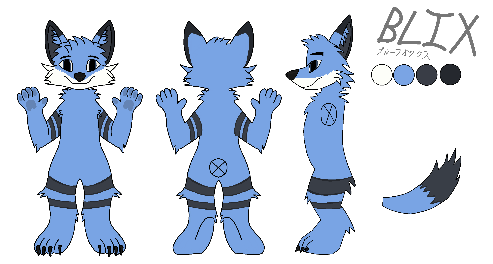

Blix is a anthropomorphic fox which is my fursona (yes im a furry).
Blix is a blue, white and black fox. His name comes from several things.
The Bl part comes from the main colour of his fur which is
blue. The x at the end comes from the second character from
my username 0x4248.
Blix's other names
Blix also has a japanese name which is ブルーフォックス and means Blue Fox.
Design
Here is the main reference sheet for Blix: 
If you want the base for the ref sheet, you can find it Here. The lines and sketch is licenced under CC-0 but the design of Blix is not.
{kind=link}
Key features
- Fox breed
- Demiboy (he/him, they/them)
- Blue, white, light grey and dark grey fur
- White parts are below nose and go to sides
- Light grey parts are in ears
- Dark grey parts are on the outside of ears
- Blue fur on the inner parts of ears.
- Blue eyes
- Black bandana
- Paws are a darker blue
- Black nose
- Body
- Two grey stripes on each arm with a black outline around them.
- Near the end of the tail it has grey fur
- Two big stripes on the each leg similar to the arms but bigger
Colours
- Main blue -
#6ca6ea- Shadow -
#5886be - Light shadow -
#679fe0
- Shadow -
- Light grey -
#383d47- Shadow -
#282a32
- Shadow -
- Grey -
#24282f - White -
#fdfef9- Shadow -
#cbcbcb - Shadow dark -
#a8a8a8
- Shadow -
- Bandana -
#32363b- Shadow -
#222529
- Shadow -
- Eye colour -
#222529
Other art
License
All work on this repo and site done my me is licensed under the CC BY-SA 4.0 license other than the base ref sheet which is licensed under CC-0.